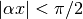

Approximation Methods¶
Variational Method¶
Trial functions¶
Some of the calculable trial functions:
- , for , otherwise 0.
- , for , otherwise 0.
 .
.- , for , otherwise 0.
- , for , otherwise 0.
Procedure¶
Pick a trial function.
Note
How to pick a trial function? For ground state energy, we should pick a function that has the same property as the real ground state. This requires some understanding of the problem we are dealing with.
Things to consider:
- The new problem is just a modification of a known solved problem. Then we can easily find out what really is different and interprete the new problem in terms of the old one.
- If the Hamiltonian have definite parity, the ground state wave function should pick up some parity which is usually even to make it the lowest energy.
- Continious function? A Hamiltonian can only have continious functions as solutions for a finite system.
- Nodes deteremines the kinetic energy so check the nodes for ground state wave function.
- Check the behivior of the wave function at different limits. In most cases, the Shrödinger equation can be reduced to something solvable at some limits.
- One more thing, the trial function should make the problem calculable.
Why Not General Viriational Method¶
Why don’t we just use a most general variational method to find out the ground state? Because we will eventually come back to the time-independent Shrödinger equation.
Suppose we have a functional form
The reason we have this Lagrange multiplier method is that the wave function should be normalized and this multiplier provides the degree of freedom. We would only get a wrong result if we don’t include this DoF.
Variation of ,

Now what?
Not helpful.
Variational Method and Virial Theorem¶
For a potential  , we can prove that virial theorem is valid for ground state if we use Gaussian trial function .
, we can prove that virial theorem is valid for ground state if we use Gaussian trial function .
A MMA proof is here.
Virial theorem is pretty interesting. It shares the same math with equipartition theorem.
WKB¶
This is a semi-classical method. It is semi classical because we will use the classical momentum
The following points are important for this method.
WKB start from a classical estimation of wave number at a certain energy
 which is later quantified by the Bohr-Sommerfeld quantization rule.
which is later quantified by the Bohr-Sommerfeld quantization rule.Conservation law:
where , . This can be derived from Shrödinger equation easily.
Phase: Wave function is generally . However, should be the area of the phase function starting from some initial point. For example in WKB, and .
Using this general wave function and conservation law we find out that . Then we can apply the two boundary conditions. However we will find two different wave functions given by two boundary conditions. Now we should connect them because exactly. By comparing the two wave functions we can find something like Bohr-Sommerfeld quantization rule.
Correction at bouldary: However, this method requires that the potential varies slowly or equivalently the wave number varies slowly. Basicly we are just using the following approximation:
For example when taking the derivative of wave function,
where we drop the term with . That is to say

But at boundary where , this is obviously not valid because . So we need to fix this problem.
The solution is to use first order of the potential in a Taylor expansion. Then solve the problem exactly. Finally we connect regions that is far out from the boundary, need the boundary and between the boundary.
If we can have a good boundary condition, then the energy spectrum given by WKB can be very good. Even we don’t have a good boundary condtion, the excited states given by this method are always close to the exact ones.